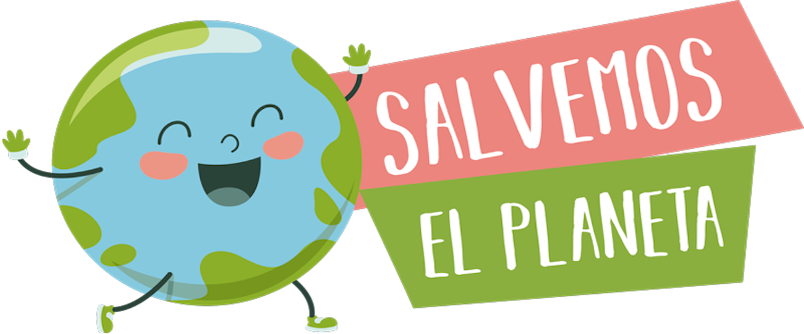

- 


Los países del mundo que acumulan más residuos peligrosos
Investigadores del instituto IFISC han identificado 28 países que corren un alto riesgo de congestión de residuos, con el consiguiente riesgo para la salud y el medio ambiente. Entre ellos se encuentran México, India y Uzbekistán, que importan grandes volúmenes de los considerados peligrosos. China, Mozambique, Senegal y Afganistán son los que presentan mayor contaminación química producida por las basuras.
Confirmado, 2020 fue uno de los tres años más cálidos desde que se tienen registros
Cada año la Sociedad Meteorológica de Estados Unidos publica su informe sobre la situación del clima a nivel global. El de 2020, publicado a finales de agosto de 2021ha confirmado que el pasado año ha sido uno de los tres años más cálidos de los que se tienen registros.
Un retrato de la Tierra dentro de 500 años
Que la Tierra persista dentro de 500 años con sus vibrantes bosques, océanos, campos y ciudades dependerá de si los humanos estamos dispuestos a cambiar sus comportamientos desde la actualidad.
Encuentran plastificantes en los músculos de tortugas del Mediterráneo
Un estudio ha comprobado que estas criaturas marinas albergan una alta concentración de estos agentes nocivos en el tejido muscular como consecuencia de la ingesta de plásticos marinos. Su exposición es mayor que la de otras especies, como las ballenas o los delfines.
La atmósfera de la Tierra tiene fecha de caducidad
Los gases que rodean nuestro planeta, ricos en oxígeno desde hace unos 2.400 millones de años, tienen fecha de caducidad y la atmósfera acabará agotando tanto su CO2 como su oxígeno, según un nuevo estudio que ha puesto en perspectiva la vida útil de nuestra capa protectora.
"Muévete por el planeta", el nuevo reto de WWF para la "Hora del Planeta 2022"
La hora del Planeta es una movilización ciudadana mundial que busca concienciar a la población sobre la importancia de la preservación del medio ambiente. Este año, además de apagar las luces durante una hora entre las 20:30 y las 21:30 del sábado 26 de marzo, la iniciativa incorpora un nuevo reto: sumar kilómetros para luchar contra el cambio climático.